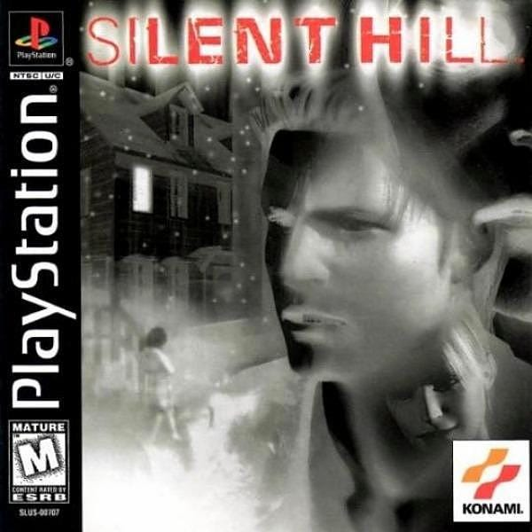
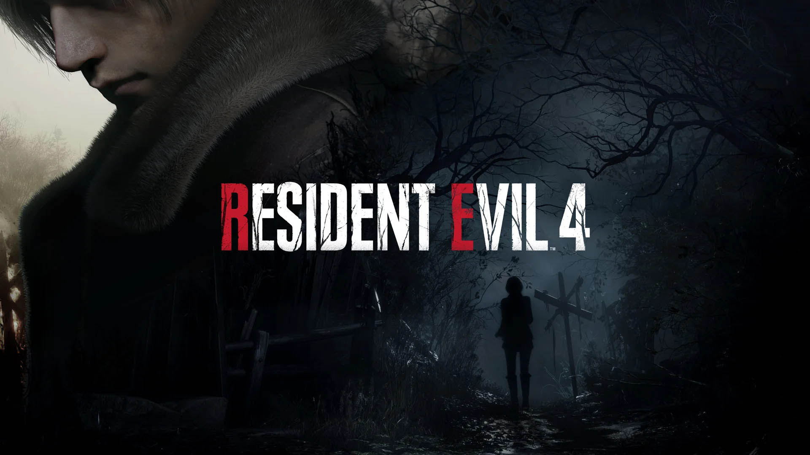

Top Games of All Time
Hello, my name is Montral and I am presenting the top games of all time.
1. Kingdom Hearts

Kingdom Hearts is a series that first released in 2002. It was developed by Square, which is known as Square Enix today.
2. Silent Hill

Silent Hill has catapulted many horror games into the mainstream world of gaming and has given much inspiration to many different people from respective audiences.
3. Resident Evil

Resident Evil is one of the most popular horror games to this day that has been a staple in survival horror. This is why this game makes it into the top three of the list.